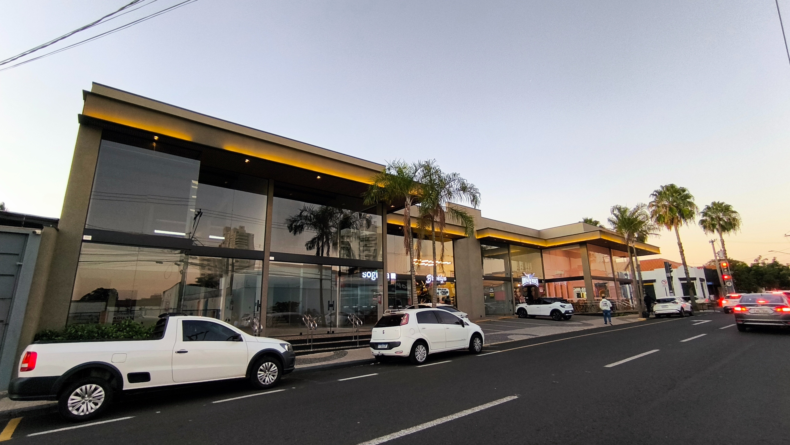
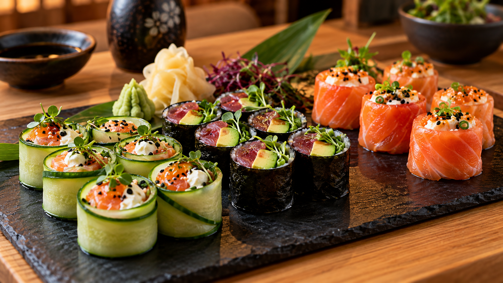
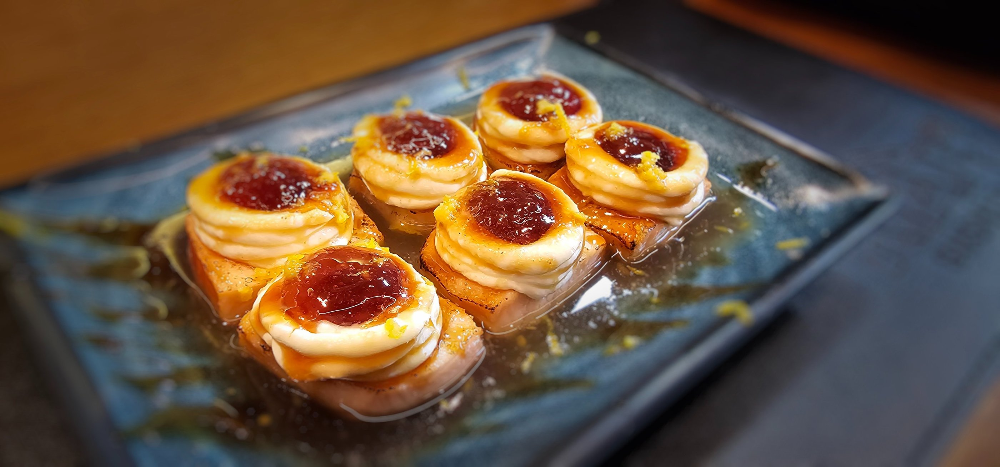
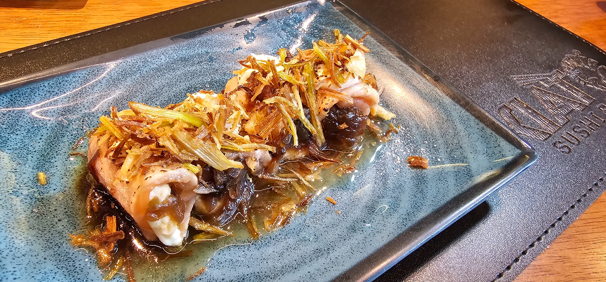
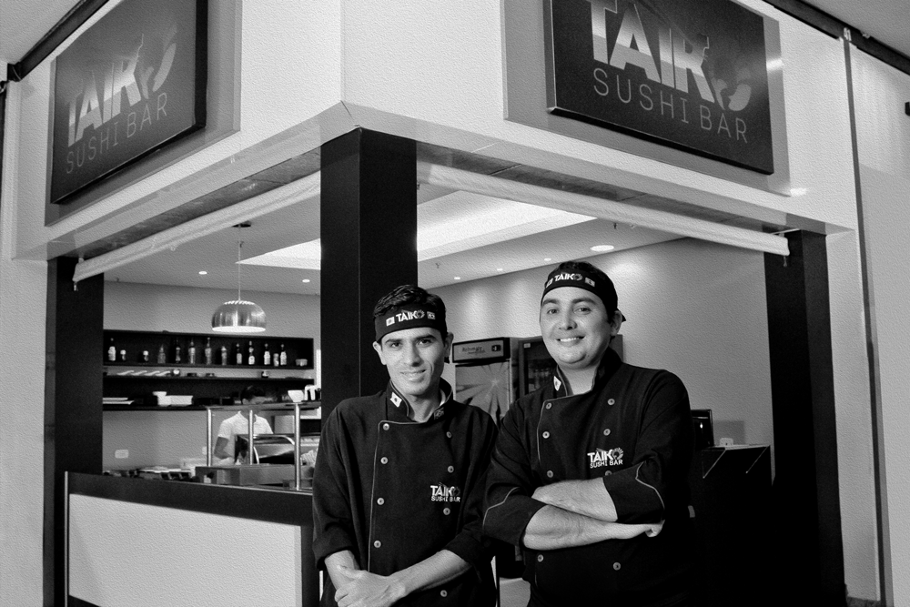
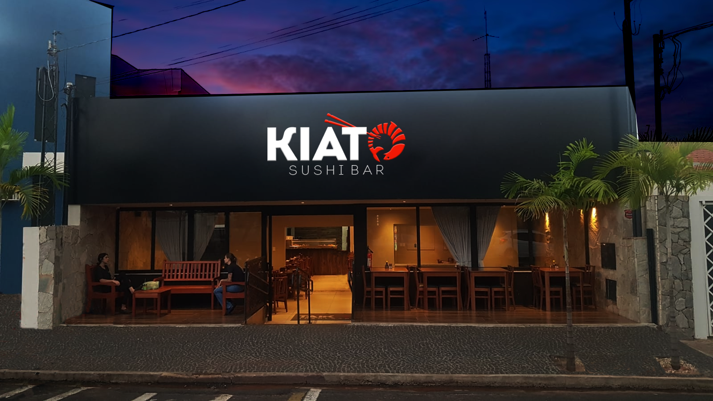
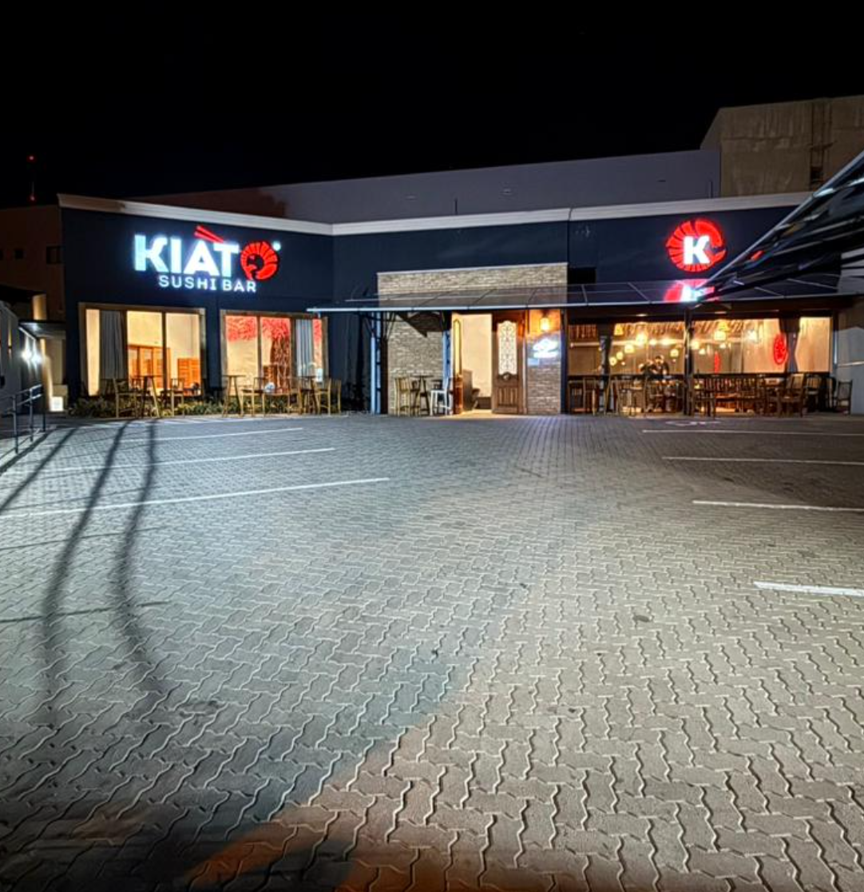
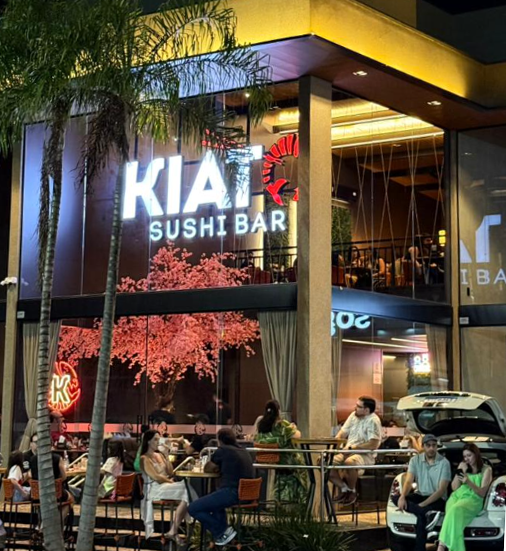
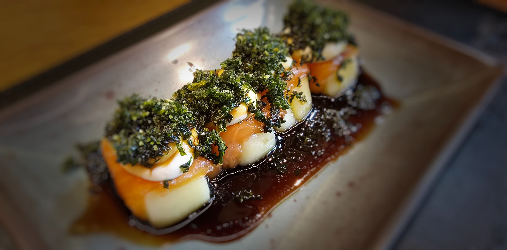

Kiato Sushi Bar · Votuporanga
Uma nova unidade Kiato em Votuporanga
Conheça o anúncio da expansão da marca para Votuporanga, com investimento superior a R$ 500 mil.
Ler a matéria

Aqui, nos dedicamos exclusivamente à experiência sem arroz. Não somos um rodízio comum com algumas alternativas: todo o cardápio foi criado em torno desse conceito. Cada peça combina inovação, qualidade e exclusividade para surpreender você.
Uma sequência de sushis sem arroz, com combinações de recheios, molhos e texturas para descobrir a cada peça.
Explore os sabores do nosso cardápio, encontre seus favoritos e repita o que mais gostou.
Veja o cardápio
Reportagens e novidades sobre nossa experiência e a expansão da marca.

Kiato Sushi Bar · Votuporanga
Conheça o anúncio da expansão da marca para Votuporanga, com investimento superior a R$ 500 mil.
Ler a matéria
Diário da Região ·
O Diário da Região apresentou a chegada do Kiato ao Jardim Yolanda e o conceito do rodízio de sushi sem arroz.
Ler a matériaQuatro criações para começar a descobrir os sabores e as texturas do Kiato.

Salmão e bacon em uma combinação de sabores marcantes.

Camarão, salmão e cream cheese, com a crocância da couve frita.

Salmão com um recheio de três queijos selecionados.

Salmão, cream cheese e cebola caramelizada, flambados no molho do chef.
Em Fernandópolis, os sushimen Cleberson Joari e Robson Batista decidiram criar seu próprio restaurante. Em 2017, inauguraram a primeira unidade no Shopping Center Fernandópolis.
A proposta de unir qualidade e inovação ganhou novos endereços e deu início à expansão da marca por meio de franquias.
Conheça nossa história
Três endereços para viver a experiência. Encontre sua unidade e trace o caminho.

Segunda a sábado
Entrada das 19h às 22h30
Cozinha até 23h30
Segunda a sábado
Entrada das 19h às 22h30
Cozinha até 23h30
Segunda a sábado
Entrada das 19h às 22h30
Cozinha até 23h30Conheça os modelos de restaurante e shopping e descubra como fazer parte da expansão do Kiato.
